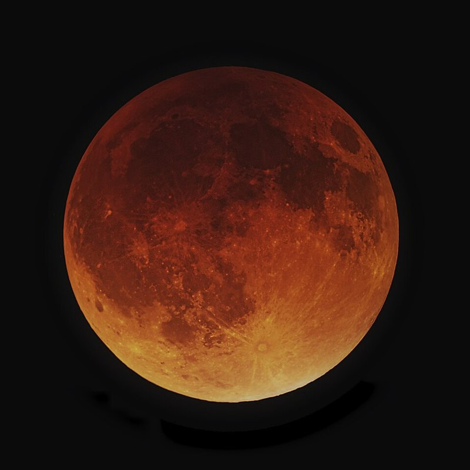

Page 2.3 ended with the Sun predicted to a few arcminutes over two thousand years, and with the Moon still to come, whose speed along the ecliptic changes far more than the Sun's. The largest part of that change repeats every 27½ days.
Hipparchus and Ptolemy explained it with a small circle carried round the Earth, the epicycle, whose size they found from three lunar eclipses. With it we can place the Moon within 40′ at every new and full Moon, the moments that decide eclipses, though not yet in between.
1 · ObservationThe Moon's speed and its period
The Moon covers 13.18° of the ecliptic a day on average, a whole turn in about 27⅓ days. Through 2026 its daily motion departs from that mean by up to 16%, almost five times as much as the Sun's does (page 2.1).
In the figure
- dashed
- the mean daily motion, 13.18°
Each fastest moment comes about two days earlier in the cycle of phases than the one before. In January the Moon is fastest just before full Moon, in June about halfway between two full Moons, and in December at full Moon again. The speed therefore has a period of its own, a little shorter than the month of the phases.
That period is the anomalistic month, 27.55 days, and the unequal motion that repeats with it is what Ptolemy calls the Moon's first anomaly. The fastest moment slips through the whole cycle of phases and comes back to full Moon after 412 days on average (Exercise 2). The fastest full Moon must fall on a full Moon, so the actual interval is 13, 14 or 15 months. From 4 December 2025 to 24 December 2026 it was 13, and the next comes 14 months later, on 10 February 2028.
Five months
Each of the Moon's motions has its own month, the time it takes to come back to the same place. The model of this page uses two of them, the tropical month for the mean motion in longitude and the anomalistic month for the motion in anomaly. The table gives all five, from the mean motions of the reference Moon, because they differ by hours and are easily confused.
| Month | The Moon returns to | Length |
|---|---|---|
| tropical | the same longitude | 27.32158 d |
| sidereal | the same star | 27.32166 d |
| synodic | the same phase | 29.53059 d |
| anomalistic | the same speed | 27.55455 d |
| draconitic | the same node, where it crosses the ecliptic | 27.21222 d |
Only 7 seconds, the precession of a month, separate the tropical from the sidereal month. The synodic month is two days longer than both, because the Sun moves on while the Moon goes round, in the way the solar day is longer than the sidereal day. And the Moon comes back to the ecliptic 2.6 hours before it comes back to the same star, so the draconitic month is the shortest of all.
The anomalistic month, by contrast, is 5.6 hours longer than the sidereal month. So the place on the ecliptic where the Moon is fastest is not fixed among the stars: it moves east, and goes round once in 8.85 years. Any model of the speed has to reproduce this motion.
Ptolemy describes how the periods were found: by comparing lunar eclipses centuries apart, and looking for an interval, a whole number of months long, over which the Moon's motion repeats (Almagest IV 2). The oldest of them, the "Periodic", makes 223 synodic months equal to 239 anomalistic months. Hipparchus' relation, 251 synodic months to 269 anomalistic months, is better: in the reference sky the two agree within six minutes. Toomer states, after Kugler and Aaboe, that Hipparchus took these relations from Babylonian astronomy, and only confirmed them by comparing eclipses of his own time with Babylonian ones 345 years earlier (note to IV 2).
2 · ModelThe epicycle
Deferent and epicycle
Ptolemy describes the model in IV 6. A circle centred on the Earth, in the plane of the ecliptic, carries the centre of a small circle, the epicycle, uniformly eastward, and the Moon moves on the epicycle "in such a way that on the arc near the apogee its motion is in advance with respect to the heavens", that is, westward, at the speed of its return in anomaly. He leaves out the small tilt of the Moon's orbit, which hardly changes its longitude.
Let the carrying circle, the deferent, have radius $R$, and the epicycle radius $r$. The centre K of the epicycle moves at the mean longitude $\bar\lambda = L_0 + n\,d$, as the mean Sun of page 1.3 does. The Moon's angle on the epicycle, counted westward from the epicycle's apogee, the point farthest from the Earth, is the anomaly $M = M_0 + n_M\,d$, the angle after which the first anomaly is named. The two daily motions $n$ and $n_M$ belong to the tropical and the anomalistic month, 13.18° and 13.06°.
The westward motion at the apogee is what makes the Moon slow there. On the far side of the epicycle the Moon's own motion runs against the eastward motion of K, while on the near side, at the perigee, the two add up.
The equation of anomaly
As on page 2.1, we write the Moon's position L as a sum of vectors, $\vec{OL} = \vec{OK} + \vec{KL}$, in a frame turned to the direction of K: its first axis points to $\bar\lambda$ and its second 90° further east. There $\vec{OK} = (R, 0)$, and the Moon, at the angle $M$ westward from the apogee, is at $r\,(\cos M, -\sin M)$ from K, so
$$\vec{OL} = \begin{pmatrix} R + r\cos M \\ -r\sin M \end{pmatrix}.$$The direction of this vector from the first axis is the angle from $\bar\lambda$ to the Moon's true longitude $\lambda$, the equation of anomaly $q$. With $e = r/R$,
This is the equation of centre of page 2.1, with the ratio of the radii in place of the eccentricity, so everything found there carries over. To first order $q \approx -e\sin M$, and the greatest equation is $\arcsin e$. For the epicycle it is reached where the line of sight from the Earth touches the epicycle, at $\cos M = -e$.
Ptolemy's epicycle has a radius of 5;15 where the deferent's is 60 ($e = 0.0875$), and its greatest equation is 5°01′, the 5;1 of his table of the first anomaly (IV 10).
The speed
To see how the model's speed varies, we differentiate $\lambda = \bar\lambda + q$ with respect to time, with $d\bar\lambda/dt = n$ and $dM/dt = n_M$. The derivative of the arctangent gives
$$\frac{d\lambda}{dt} = n + n_M\,\frac{dq}{dM}, \qquad \frac{dq}{dM} = -\frac{e\,(e + \cos M)}{1 + 2e\cos M + e^2}.$$The Moon is slowest at the apogee of the epicycle, where $M = 0$ and the speed is $n - n_M\,e/(1 + e)$, and fastest at the perigee, $n + n_M\,e/(1 - e)$. With Ptolemy's ratio these are 12.13° and 14.43° a day. The speed repeats with $M$, every anomalistic month, as section 1 requires. The real Moon's range in Figure 1 is wider still.
The real ratio is small enough that, drawn to scale, the epicycle is hard to see, so Figure 2 starts with $r/R = 0.3$, three and a half times Ptolemy's.
(a) the deferent and the epicycle
(b) the equation of anomaly over two months
In panel (a)
- dashed
- the mean longitude $\bar\lambda$
- $M$
- counted westward (clockwise) from the apogee of the epicycle
The epicycle and the eccentric
Page 2.1 noted that the Sun's inequality can be produced either by an eccentric or by an epicycle. The two models are equivalent, and once the Moon's position is written as a sum of vectors the proof is short. With $\hat u(\lambda)$ the unit vector at longitude $\lambda$, the epicycle puts the Moon at
$$\vec{OL} = R\,\hat u(\bar\lambda) + r\,\hat u(\bar\lambda - M).$$Vector addition commutes, so the same point is $r\,\hat u(\bar\lambda - M) + R\,\hat u(\bar\lambda)$. Read this way, the Moon moves at the mean longitude on a circle of radius $R$ whose centre C lies at the distance $r$ from the Earth, towards $\bar\lambda - M$. That circle is an eccentric with eccentricity $e = r/R$ and its apogee at $\lambda_A = \bar\lambda - M$:
The two constructions give the same point at every moment, and so the same longitude and the same distance, provided the eccentric's apogee moves at the difference of the two mean motions. The Earth O, the centre K, the Moon and the centre C are the corners of a parallelogram.
That parallelogram is Ptolemy's proof (IV 5). He concludes that "the same phenomena will in all cases result from both the hypotheses", whether the periods of the anomaly and of the longitude are equal, as for the Sun, or unequal, as for the Moon, provided the ratios are the same. An eccentric of another size, with the same ratio of eccentricity to radius, still gives the same directions; only the distances change (Exercise 1).
For the Sun the two periods are equal, $n = n_M$, and the eccentric of page 2.1 does not turn, apart from the slow motion of page 2.3. For the Moon $n - n_M = 0.1114^\circ$ a day: the eccentric's apogee moves east by 3.07° every anomalistic month and goes round in 8.85 years, the motion of the place of greatest speed found in section 1.
Ptolemy chose the epicycle for the first anomaly because he wanted the eccentric for the second (IV 5).
In the figure
- dotted
- the eccentric's line of apsides
3 · FitThe epicycle from three eclipses
The model has five parameters: the two mean motions, the ratio $e = r/R$, and the mean longitude and the anomaly at one moment, which fix $L_0$ and $M_0$. The mean motions come from the months of section 1, and we take the reference Moon's, $n = 13.17640^\circ$ and $n_M = 13.06499^\circ$ a day (Meeus 47). The other three come from observations.
Lunar eclipses as observations
Ptolemy insists that the theory of the Moon be built on lunar eclipses, "the only observations which allow one to determine the lunar position precisely" (IV 1). At the middle of a lunar eclipse the Moon is opposite the Sun, whose longitude the eccentric of page 2.1 gives, so the Moon's longitude is known without measuring it against the stars. And the Moon is near enough for an observer's place on the Earth to shift it against the stars, a parallax that does not affect the moment of an eclipse.
Ptolemy gives a second reason when he introduces the model: the Moon has a second anomaly, which vanishes at new and full Moon (IV 5, V 2), so eclipses show the first one alone.

.jpg){kind=link}
The three-eclipse method
Three eclipses give the Moon's true longitude at three known moments. The unknowns are $e$ and the mean longitude and the anomaly $M_2$ at the second eclipse. Taking away the mean motion over each interval removes the mean longitude: the true motion minus the mean motion, $d_{12}$ from the first eclipse to the second and $d_{23}$ from the second to the third, is the change of $q$. With $a_{12}$ and $a_{23}$ the arcs of anomaly covered in the two intervals, from $n_M$,
$$d_{12} = q(M_2) - q(M_2 - a_{12}), \qquad d_{23} = q(M_2 + a_{23}) - q(M_2).$$To first order, $q(M) = -e\sin M$, and these two equations for $e$ and $M_2$ become linear. With $X = e\cos M_2$ and $Y = e\sin M_2$, since $e\sin(M_2 + a) = X\sin a + Y\cos a$, they read (with $d$ in radians)
$$\begin{aligned} d_{12} &= -X\sin a_{12} - Y\,(1 - \cos a_{12}), \\ d_{23} &= -X\sin a_{23} + Y\,(1 - \cos a_{23}). \end{aligned}$$Their solution gives $e = \sqrt{X^2 + Y^2}$ and $M_2 = \operatorname{atan2}(Y, X)$ to first order. Newton's method, started there, solves the exact equations in a few steps, and the mean longitude at the second eclipse is then its true longitude less $q(M_2)$.
Ptolemy solves the same problem exactly, with chords, following Hipparchus' method (IV 5, IV 6). He does it twice: with three Babylonian eclipses of 721 and 720 BC, and with three he observed at Alexandria in AD 133 to 136. He finds the epicycle 5;13 and 5;14 where the deferent is 60, "very nearly the same", and uses 5;15. Figure 4 gives back his numbers within a minute of a part (Exercise 3).
Copernicus repeated the method fourteen centuries later with three eclipses he observed in 1511, 1522 and 1523, and found 8,604 parts where the deferent is 100,000 (De Revolutionibus IV 5). From his data the method gives 0.08605.
(a) the Moon on the epicycle at the three eclipses
(b) the two equations
In panel (b)
- red
- the equation of $d_{12}$, solid where it holds exactly, dashed to first order
- purple
- the equation of $d_{23}$, in the same way
- grey dot
- the first-order solution
Our epicycle
We apply the method to the three lunar eclipses around 2026, on 7 September 2025, 3 March 2026 and 28 August 2026. At the moments of opposition, within minutes of mid-eclipse, the reference Moon is at 345.37°, 162.91° and 334.90°. The method gives $e = 0.0844$, a greatest equation of 4.84°, and puts the Moon 275.0° from the apogee at the second eclipse.
Going back from the second eclipse to J2000.0 at the two mean rates gives $L_0$ and $M_0$. The mean longitude we find there differs from Meeus' by a quarter of an arcminute.
Every three consecutive eclipses from 2019 to 2030 give a ratio between 0.080 and 0.093, and a least-squares fit to all 25 new and full Moons of 2026 gives 0.0864. The spread comes from the smaller inequalities the model leaves out.
4 · TestThe epicycle against the real Moon
The epicycle was fitted to three eclipses, all at full Moon. The test is whether it also holds at the other phases, and in other years. Figure 5 gives its error curve, $\Delta\lambda = \lambda_\text{model} - \lambda_\text{ref}$, beside that of the uniform Moon, which has the same mean motion and no epicycle.
Over 2026 the epicycle is wrong by up to about 3°, against almost 8° for the uniform Moon, and still far worse than the eccentric was for the Sun.
At the 25 new and full Moons of the year, however, the epicycle is never more than 40′ from the real Moon. Over a thousand years the error there does not grow, which is no surprise, since our mean motions are those of the reference Moon itself.
Ptolemy's simple Moon
To judge the model in its own time, we run Ptolemy's version of it: his mean motions, the epoch of IV 8, his ratio 5;15, and days of the turning Earth, as for his Sun on page 2.1.
At the three eclipses he observed, his Moon is about a degree behind the real one, by 69′, 64′ and 62′, and his Sun is behind by 43′ to 75′ at the same moments (page 2.1). Ptolemy placed the Moon opposite his Sun at each eclipse, so his Moon inherits his Sun's error, and so does the epoch he fixed from those eclipses.
Over the centuries his Moon drifts with his Sun, and a little faster. By 2026 it is 10° behind the real Moon at new and full Moon, where his Sun is 9.2° behind. The rest comes from Hipparchus' month, half a second too long, which adds up to 1.5° over the nineteen centuries.
5 · ResidualRight at new and full Moon, wrong at the quarters
The largest errors of Figure 5 come at the quarters, when the Moon is 90° from the Sun, where eclipses never see it. An epicycle fitted to eclipses has no way of knowing how the Moon moves there.
Hipparchus' own sighting shows the discrepancy. On 5 August 127 BC, at Rhodes, he measured the Moon 86;15° (86.25°) west of the Sun, and Ptolemy computes that the first anomaly alone puts it 2.7° farther from the Sun. From "numerous other similar observations" Ptolemy concludes that near the quarters the greatest equation is about 7⅔°, not 5° (V 3).
In the series of the reference Moon, the Moon's orbit is close to an ellipse of eccentricity 0.055, which gives a greatest equation of 6.3°, twice the eccentricity in radians, as for the Sun on page 2.1. On top of it the Sun's pull adds the evection, a term of 1.27° that depends on the Moon's elongation from the Sun.
At new and full Moon the evection takes 1.27° away from the 6.29° of the ellipse, leaving about 5.0°, close to what the eclipses measure; at the quarters it adds the same amount, giving 7.56°, Ptolemy's 7⅔°.
What remains at the new and full Moons, up to 40′, has two parts of about the same size. One is the fit to only three eclipses: an epicycle fitted by least squares to all 25 new and full Moons of 2026 stays within 22′. Most of the other is the annual equation, a term of 11′ that follows the Sun's anomaly, with a few arcminutes from the tilt of the Moon's orbit.
The epicycle is therefore good at new and full Moon, which is what eclipses need, and wrong by up to 3° in between. What it lacks is a model of the evection; page 3.2 gives Ptolemy's, and shows what it does to the Moon's distance.
Exercises
Prove the theorem of section 2 in Ptolemy's general form: an eccentric of radius $R'$, whose centre is at the distance $r'$ from the Earth with $r'/R' = r/R$, whose apogee moves at $n - n_M$, and on which the Moon is seen from the centre at the mean longitude $\bar\lambda$, puts the Moon in the same direction as the epicycle at every moment, but not at the same distance. Then apply it to Hipparchus: Ptolemy reports that he found 6;15 where the radius is 60 with an eccentric, and 4;46 with an epicycle (IV 11). Can both describe the same Moon? Find the greatest equation of each.
Write the eccentric's Moon as a sum of two vectors, as section 2 does for the epicycle.
The eccentric puts the Moon at $r'\,\hat u(\bar\lambda - M) + R'\,\hat u(\bar\lambda)$. Since $r' = (R'/R)\,r$, this is
$$\frac{R'}{R}\left[\,r\,\hat u(\bar\lambda - M) + R\,\hat u(\bar\lambda)\,\right] = \frac{R'}{R}\,\vec{OL},$$the epicycle's vector multiplied by the positive number $R'/R$: the same direction at every moment, at a distance $R'/R$ times the epicycle's.
Only the ratio matters, so two models with different ratios describe two different Moons. The greatest equation of 6;15 in 60 is $\arcsin 0.10417 = 5^\circ 58' 45''$, and that of 4;46 in 60 is $\arcsin 0.07944 = 4^\circ 33' 24''$, against $5^\circ 01' 11''$ for Ptolemy's 5;15. Ptolemy writes 5;49 and 4;34, where Toomer notes that the correct values are 5;59 and 4;33. Ptolemy blames the discrepancy not on the two hypotheses but on Hipparchus' computation of the intervals between his eclipses (IV 11).
The fastest full Moons come roughly every fourteen months. In the reference sky the first of the century was on 8 February 2001, and 34 intervals later the last before 2040 was on 6 June 2039, 13,997.5 days later. From this and the synodic month, 29.530589 days, find the anomalistic month. How many synodic and anomalistic months does one interval hold?
Over one interval, how many more turns has the anomaly made than the phases?
One interval lasts $B = 13{,}997.5 / 34 = 411.69$ days. In it the anomaly makes one turn more than the phases, $B/P_a = B/P_s + 1$, so
$$\frac{1}{P_a} = \frac{1}{P_s} + \frac{1}{B}, \qquad P_a = \frac{1}{1/29.530589 + 1/411.69} = 27.5541 \text{ days},$$36 seconds less than the real 27.5545 days. One interval holds 13.94 synodic months and 14.94 anomalistic months. The fastest full Moon can only fall on a full Moon, so a single interval is 384, 413 or 443 days; only the average over many intervals gives the beat. The Periodic of section 1 gives $223 \times 29.530589 / 239 = 27.5536$ days.
Between Ptolemy's first two Babylonian eclipses the Moon covered 306;25° of anomaly, and its true motion exceeded the mean motion by 3;24°; between the second and the third it covered 150;26° of anomaly, and the true motion fell short by 0;37° (IV 6). Solve the first-order equations of section 3 for $X$ and $Y$, then find $e$ and $M_2$, and compare with the exact solution of Figure 4 ("Babylon, 721 BC") and with Ptolemy's 5;13 and 12;24°. The Moon's true longitude at the second eclipse was Virgo 13;45 (163.75°): where was the mean Moon?
Use $a_{12} = 306.4167^\circ$, $a_{23} = 150.4333^\circ$, $d_{12} = 3.4^\circ$ and $d_{23} = -0.6167^\circ$, in radians on the left.
In radians $d_{12} = 0.05934$ and $d_{23} = -0.01076$, and the two equations are
$$\begin{aligned} 0.8047\,X - 0.4063\,Y &= 0.05934, \\ -0.4934\,X + 1.8698\,Y &= -0.01076, \end{aligned}$$whose solution is $X = 0.08173$, $Y = 0.01581$, so to first order $e = 0.0832$ and $M_2 = 10.9^\circ$. The exact equations give $e = 0.08694$, 5;12,59 parts where the radius is 60, and $M_2 = 12^\circ 24' 11''$: Ptolemy's 5;13 and 12;24°. The first order is 4% short in $e$: the terms of order $e^2$ it leaves out are not small beside $d_{23}$, which is only 0.62°.
The equation at the second eclipse is $q(M_2) = -0^\circ 59' 10''$, Ptolemy's $-0;59$, so the mean Moon was at $163.75^\circ + 0.986^\circ = 164.736^\circ$, Virgo 14;44, as he finds.
Sources
- Ptolemy, Almagest (transl. G. J. Toomer, 1984): IV 1 (lunar theory from lunar eclipses); IV 2 (the periods of the Moon, the Periodic, Hipparchus' 251 months and 269 returns in anomaly, with Toomer's note on their Babylonian origin); IV 3 (the mean motions); IV 5 (the equivalence of the eccentric and the epicycle); IV 6 (the epicycle model, the Babylonian and the Alexandrian eclipses, 5;13 and 5;14); IV 7–8 (the correction of the anomaly, the epoch); IV 9–10 (the ratio 5;15 and the table of the first anomaly); IV 11 (Hipparchus' two ratios, with Toomer's corrections); V 2–3 (the second anomaly, Hipparchus' sighting of 127 BC, about 7⅔° at the quarters, Toomer's note on the 248-day table).
- Copernicus, De Revolutionibus (transl. E. Rosen), IV 4 (the periods from Hipparchus) and IV 5 [ff. 105v–109r] (the method of three eclipses, his eclipses of 1511, 1522 and 1523, 8,604 parts in 100,000).
- R. Fitzpatrick, A Modern Almagest, § 6.1 (the lunar anomalies: the ellipse, the evection, the variation, the annual equation; the motion of the perigee in 8.85 years).
- J. Meeus, Astronomical Algorithms (2nd ed., 1998), ch. 47 (the reference Moon, its mean longitude, mean anomaly and argument of latitude, the terms of the evection).
- Every number on this page:
tools/numbers/3.1-first-anomaly.js.